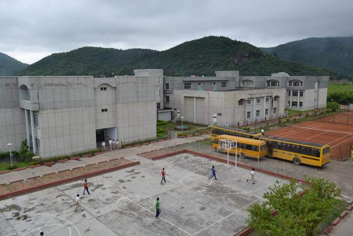

Sarala Birla Gyan Jyoti
Contents
My experiance in SBGJ
Being a part of SBGJ for the past 10 years,I have learnt a plethora of values and qualities.It will be fair to say that this school has made me the person that I am.From my first
day as a new student to this very day,
every momment has been wonderful,even those classes where I can barely open my eyes.
Events
Sarala Birla Gyan Jyoti organises a lot if events - from Symphony to Inter-School Taekwondo Competition,each one better than the previous one.Our school likes to celebrate all festivals
with a grand assembly.Whether its Santa Claus distributing chocolates to the students right after the students recreate the nativity scene or celebrating Magh Bihu by lighting the
Meji,each event or celebration has managed to make a significant mark in my memory lane.Form Evenings,Literary Fests,Sankardev Tithi,Hindi Divas,Rhino Fest are just a few of the competitions
and events organised by our school.Various workshops are frequently held at the school teaching us about a number of things like fire evacuation,stuff we should know to be a successful commercial writer,climate
crisis and its impacts and a lot more.
Our school has a very special and intimate way to organise the Farewell for the batch of Class 12.My sister celebrated her Farewell this year and it was the most excited she has ever been.

Location
Located in a scenic place in North Guwahati,it is a little far away from the the main city,across the Bramhaputra.It takes an hour from my home to reach the school by bus.As it is
located in North Guwahati,winter mornings are extra foggy in the school.It is opposite Rajiv Gandhi Indoor Stadium, on National Highway-31.Our school overlooks a beautiful range of hills
which is a pleasure to just look at.